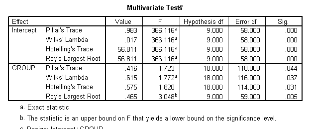

| Tag | Value |
|---|---|
| file | Inferential_Statistics_vufsw-manova-1041-nl_vufsw-manova-1041-nl |
| name | vufsw-manova-1041-nl |
| section | inferential statistics/parametric techniques/anova/manova |
| type | schoice |
| solution | TRUE, FALSE, FALSE, FALSE |
| Type | interpreting output |
| Program | NA |
| Language | dutch |
| Level | statistical literacy |
Een psycholoog was geïnteresseerd in het meten van het succes van een
stemmingsmanipulatie tijdens een van haar experimenten. Ze had drie
groepen deelnemers die verschillende soorten stemmingsinductie
ondergingen: walging stemmingsinductie, negatieve stemmingsinductie en
positieve stemmingsinductie.
Na de stemmingsinductie werden de deelnemers gevraagd om negen
uitspraken over hun stemming in te vullen(op een Likert-schaal van 5
punten van 1 = niet mee eens tot 5 = mee eens):
(1) Als je lacht, glimlacht de hele wereld met je mee,
( 2) Ik ben dol op de mooie bloemen,
(3) ik zou nooit een dood lichaam kunnen aanraken,
(4) ik zou nooit kattenvoer eten,
(5) als iemand me apenhersensoep serveerde, zou ik overgeven,
(6) ik ben het zat,
(7) Lichaamsvloeistoffen zijn smerig,
(8) ik kon niet drinken uit een glas dat ik had gebruikt om een spin te
vangen,
(9) ik ben een waardeloos stuk uitschot.
Een deel van de output staat hieronder. Welke van de volgende uitspraken
vat de output het beste samen?

MANOVA tests whether the independent variable (here: type of mood induction) has an effect on all the dependent variables together